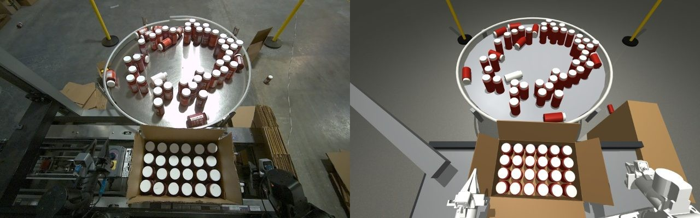
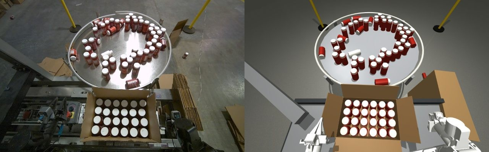
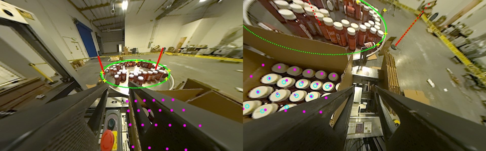
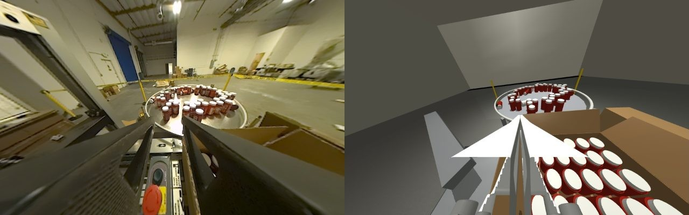
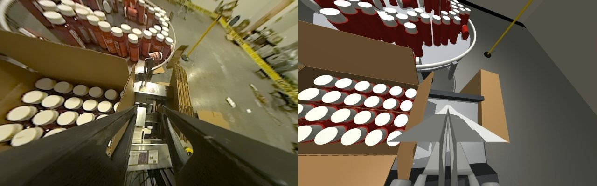

I measured the cell from the robot's own cameras: the ZED X Mini stereo pair over the cell and the two ZED One wrist cameras. From that I built a MuJoCo scene with the FR2 URDF, a spinning lazy-susan turntable, 51 loose bottles at their real positions, and the case of 24. Each image below shows the real camera next to the sim rendered from the same pose.




